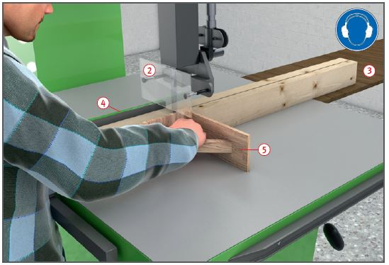
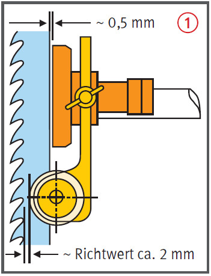
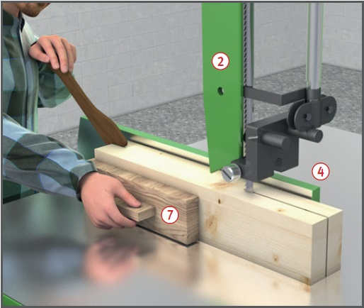
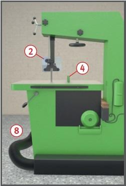
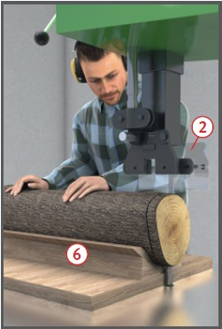

Gefährdungen
- Es kann zu Schnittverletzungen kommen und bei einem Verkanten des Werkstücks kann das Bandsägeblatt reißen und Verletzungen verursachen.
- Es kann zu einer Schädigung des Gehörs kommen.
- Das Einatmen freigesetzter gesundheitsschädlicher Stäube kann zu einer Erkrankung der Atemwege führen.
Schutzmaßnahmen
- Betriebsanleitung des Herstellers beachten.
- Unterweisung anhand der Betriebsanweisung
- Gehörschutz und Sicherheitsschuhe benutzen. Lärmbereiche kennzeichnen.
- Eng anliegende Kleidung tragen.
- Gefahrenbereich von 120 mm rund um das Sägeblatt beachten.
Sägeblattführungen einstellen  :
:
- Seitenführung bis dicht an den Zahngrund heranstellen,
- Rückenrolle auf ca. 0,5 mm
Abstand zum Sägeblatt einstellen.
Die Rückenrolle soll
nur während des Schneidvorganges mitlaufen.
- Höhenverstellbare Verdeckung
entsprechend dem zu bearbeitenden
Werkstück einstellen
 .
.
- Darauf achten, dass das Sägeblatt
bis auf den zum Schneiden benötigten Teil verkleidet ist.
- Sägeblattdicke in Abhängigkeit
vom Rollendurchmesser
auswählen (ca. 1/1000 des
Rollendurchmessers).

- Schmale Sägeblätter nur zum
Bogenschneiden benutzen.
- Beim Werkstückverschub
Hände flach auf das Werkstück
legen, Finger nicht spreizen.
- Werkstück nicht zurückziehen,
weil hierdurch das Sägeblatt von den Rollen ablaufen kann.
- Werkstücke so vorschieben,
dass sich die Schnittfuge nicht schließt.
- Bei Hochkantquerschnitten
immer die untere Kante dem Sägeblatt zuerst zuführen.
- Hilfseinrichtungen auch bei
Einzelstücken benutzen, z. B.
- Tischverlängerungen beim Auftrennen
langer Werkstücke
 ,
,
- Anschlag
 und Anlagewinkel
und Anlagewinkel  zum seitlichen Abstützen
langer und hoher Werkstücke,
zum seitlichen Abstützen
langer und hoher Werkstücke,
- Keilstütze zum Schneiden von
Rundhölzern
 ,
,
- Vorrichtung zum Schneiden
von Dreiecksleisten,
- Keilschneidlade zum
Schneiden von Keilen,
- Zuführholz oder Schiebestock zum Vorschieben schmaler Werkstücke
 .
.


- Tischeinlage auswechseln,
- wenn sie nicht mehr mit der Tischoberfläche bündig ist,
- wenn beiderseits der Schnittfuge
ein Spalt von > 3 mm
vorhanden ist.
Ausnahme: Maschinen mit
schrägstellbarem Tisch.
- Nur Tischeinlagen aus Holz oder Kunststoff benutzen.
- Bandspannung beobachten
und Bandsägeblatt ggf. nachspannen.
- Maschine nur mit wirksamer
Absaugung betreiben
 .
.
- Absaugung möglichst direkt
unter dem Tisch nahe der
Schneidstelle anbringen
(Tischeinlage mit Löchern).
- Splitter, Späne und Abfälle
nicht mit der Hand aus dem
Gefahrenbereich entfernen.
- Auch bei kurzen Unterbrechungen
Maschine abschalten; nachlaufendes Sägeblatt verdecken.
- Vor Reinigungs- und Wartungsarbeiten
Maschine gegen unbeabsichtigtes Einschalten sichern.
Zusätzliche Hinweise für Bandsägeblätter
- Keine rissigen Sägeblätter verwenden.
- Nur gleichmäßig geschränkte
und scharfe Sägeblätter verwenden. Bei Bandsägeblättern,
die stumpf sind, Schärf- und
Schränkfehler haben, besteht
Rissgefahr.

Arbeitsmedizinische Vorsorge
- Arbeitsmedizinische Vorsorge
nach Ergebnis der Gefährdungsbeurteilung
veranlassen (Pflichtvorsorge)
oder anbieten (Angebotsvorsorge).
Hierzu Beratung
durch den Betriebsarzt.
Beschäftigungsbeschränkungen
- Jugendliche über 15 Jahre
dürfen nur unter Aufsicht eines
Fachkundigen und wenn es die
Berufsausbildung erfordert an
Bandsägemaschinen arbeiten.
- Jugendliche unter 15 Jahre
dürfen nicht an diesen Maschinen beschäftigt werden.
07/2021